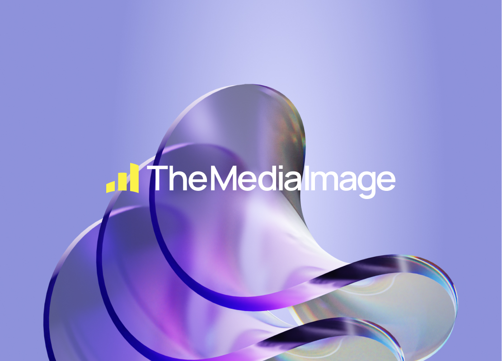
Sinds 2015 opgeleid als digitale duizendpoot en bezig met het realiseren van totaalconcepten. Tot ik mijn passie vond in UX design. Nu gebruik ik dagelijks mijn kritische blik om digitale producten te creëren, te verbeteren en te optimaliseren.
Ik duik in complexe vraagstukken en vertaal de wensen van de gebruiker naar toegankelijke digitale producten.
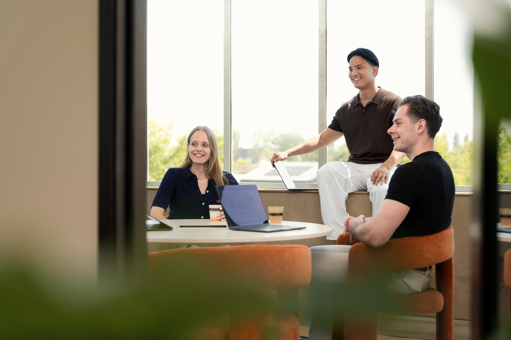
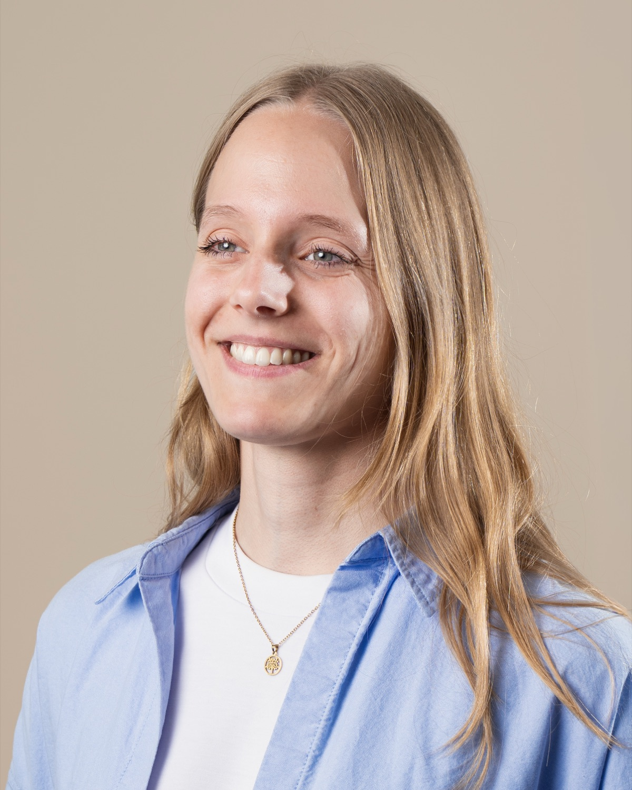
Werkwijze
Hoe ik concepten vertaal naar functionele en gebruiksvriendelijke designs.
-
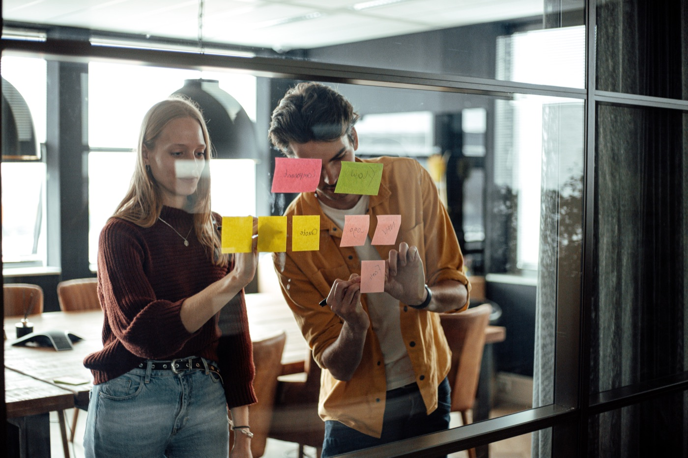
Onderzoeks fase
Site analyse, Websessie, User flows
-
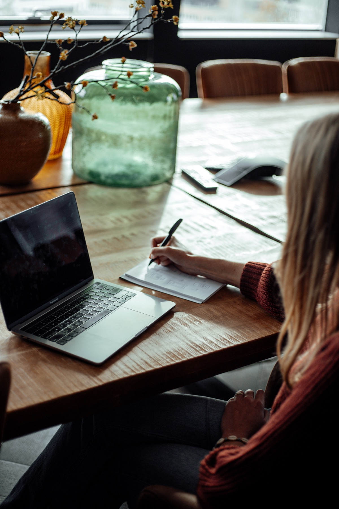
Ontwerp fase
Sitemap, Wireframes, AI Prototyping
-
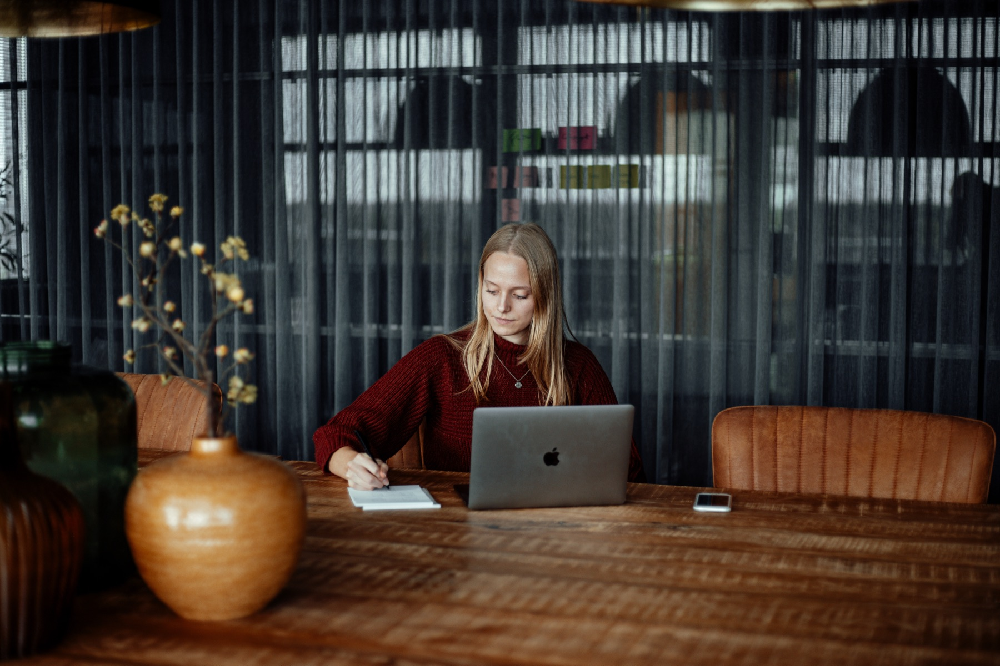
Test fase
Feedback, Iteratie en Evaluatie
Projecten
Een overzicht van mijn recent gemaakte werk.

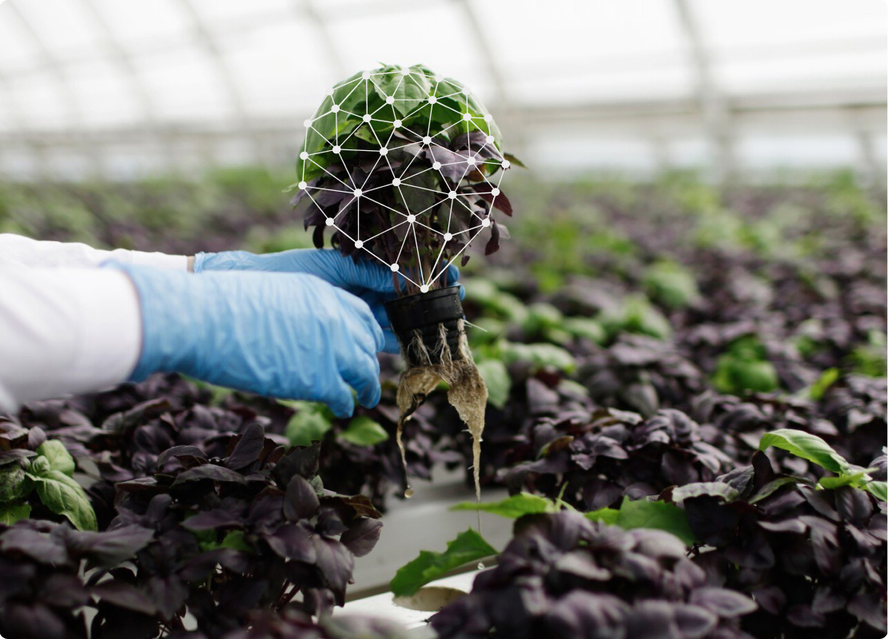


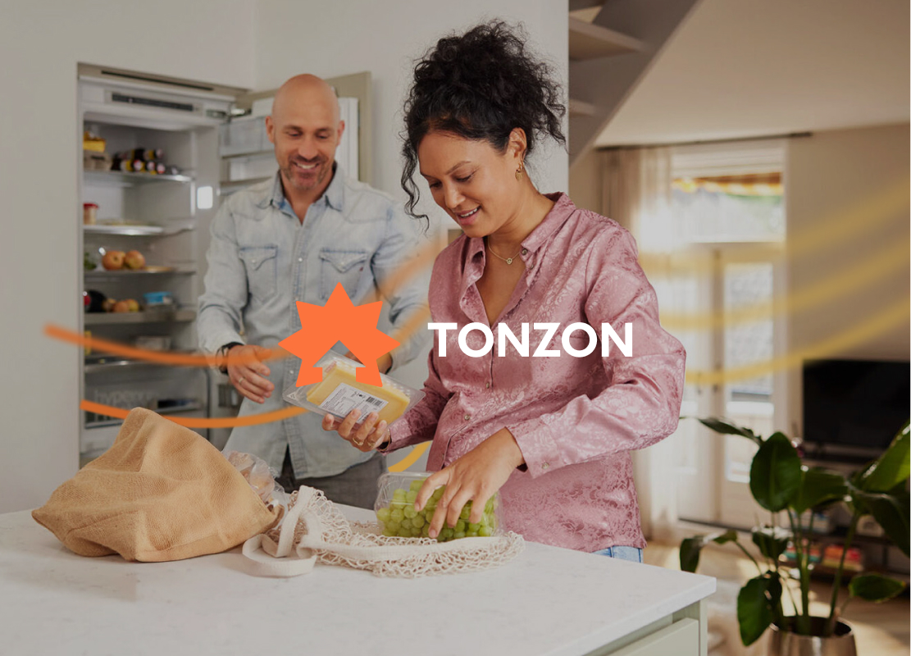
Meer toffe klanten waarvoor ik heb gewerkt
-
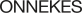
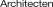
-
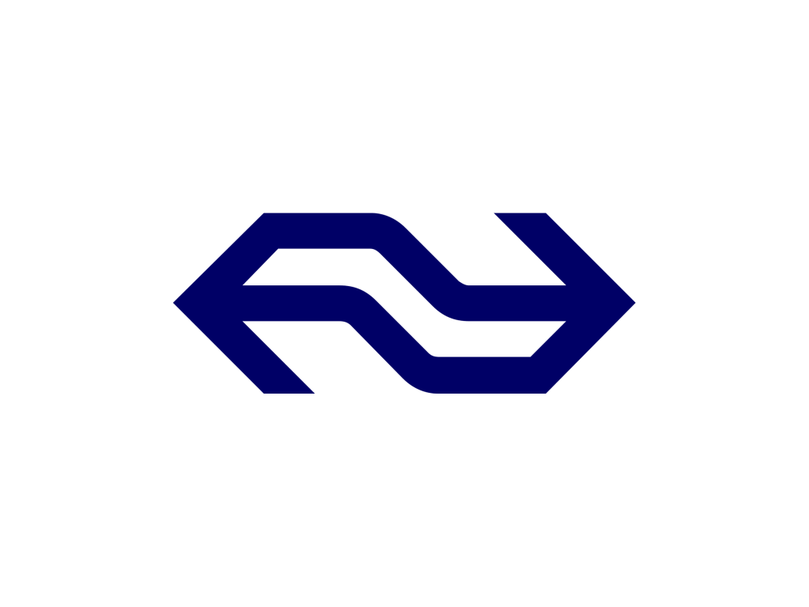
-
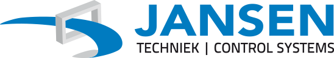
Ervaring
- 2024 - 2026 Mandelo Digital Branding Agency UX Designer
- 2022 - 2023 Gravity Digital Development Agency Business Designer (stage)
- 2021 Yard Digital Agency UX Designer (stage + meewerktraject)
- 2019 Admore Concept & Vormgeving Grafisch Vormgever (stage)
- 2019 - 2023 Hogeschool van Amsterdam Communication & Multimedia Design Bachelor of Applied Science
- 2015 - 2019 Nimeto Utrecht Ruimtelijke Vormgeving MBO 4 Diploma
De toolbox waarmee ik werk
-
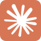
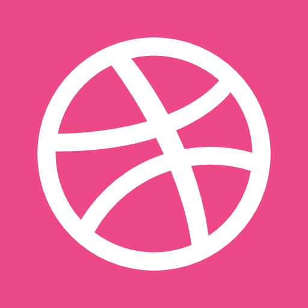
-
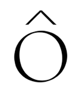